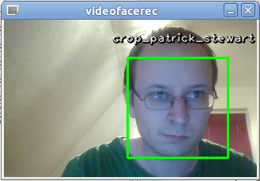

facerec
Overview
This project implements a face recognition framework for Python with:
- Preprocessing
- Histogram Equalization
- Local Binary Patterns
- TanTriggsPreprocessing (Tan, X., and Triggs, B. "Enhanced local texture feature sets for face recognition under difficult lighting conditions.". IEEE Transactions on Image Processing 19 (2010), 1635–650.)
- Feature Extraction
- Eigenfaces (Turk, M., and Pentland, A. "Eigenfaces for recognition.". Journal of Cognitive Neuroscience 3 (1991), 71–86.)
- Fisherfaces (Belhumeur, P. N., Hespanha, J., and Kriegman, D. "Eigenfaces vs. Fisherfaces: Recognition using class specific linear projection.". IEEE Transactions on Pattern Analysis and Machine Intelligence 19, 7 (1997), 711–720.)
- Local Binary Patterns Histograms (Ahonen, T., Hadid, A., and Pietikainen, M. "Face Recognition with Local Binary Patterns.". Computer Vision - ECCV 2004 (2004), 469–481.)
- Original LBP
- Extended LBP
- Local Phase Quantization (Ojansivu V & Heikkilä J. "Blur insensitive texture classification using local phase quantization." Proc. Image and Signal Processing (ICISP 2008), 5099:236-243.)
- Classifier
- k-Nearest Neighbor; available distance metrics
- Euclidean Distance
- Cosine Distance
- ChiSquare Distance
- Bin Ratio Distance
- Support Vector Machines; using libsvm bindings. (Vapnik, V. "Statistical Learning Theory.". John Wiley and Sons, New York, 1998.)
- k-Nearest Neighbor; available distance metrics
- Cross Validation
- k-fold Cross Validation
- Leave-One-Out Cross Validation
- Leave-One-Class-Out Cross Validation
Documentation
You can find the documentation in the doc folder coming with this project. I have added the build html folder to
the repository, so you don't need to build it by yourself. But if you want to build the documentation by yourself,
here is how to do it.
I've uploaded the documentation to my website, if you just want to view the documentation without cloning the repository:
Dependencies
Python2
pip install future
pip install scikit-learn
pip install numpy
pip install scipy
pip install matplotlib
pip install PIL
Python3
pip install scikit-learn
pip install numpy
pip install scipy
pip install matplotlib
pip install Pillow
Sphinx
You need to install Sphinx in order to build the project, which can be obtained with pip:
pip install sphinx
Build the Documentation
Windows:
make.cmd html
Linux:
make html
Or if you only have sphinx installed then simply run:
sphinx-build -b html source build
Old Documentation
I've appended the old documentation, so people can also read this without visiting other pages.
A simple example for beginners
Due to popular request, I've created a simple example for getting started with the facerec framework.
Getting the data right
We aren't doing a toy example, so you'll need some image data. For sake of simplicity I have assumed, that the images (the faces, persons you want to recognize) are given in folders. So imagine I have a folder images (the dataset!), with the subfolders person1, person2 and so on:
philipp@mango:~/facerec/data/images$ tree -L 2 | head -n 20
.
|-- person1
| |-- 1.jpg
| |-- 2.jpg
| |-- 3.jpg
| |-- 4.jpg
|-- person2
| |-- 1.jpg
| |-- 2.jpg
| |-- 3.jpg
| |-- 4.jpg
[...]
One of the public available datasets, that is already coming in such a folder structure is the AT&T Facedatabase, available at:
Once unpacked it is going to look like this (on my filesystem it is unpacked to /home/philipp/facerec/data/at/, your path is different!):
philipp@mango:~/facerec/data/at$ tree .
.
|-- README
|-- s1
| |-- 1.pgm
| |-- 2.pgm
[...]
| `-- 10.pgm
|-- s2
| |-- 1.pgm
| |-- 2.pgm
[...]
| `-- 10.pgm
|-- s3
| |-- 1.pgm
| |-- 2.pgm
[...]
| `-- 10.pgm
...
40 directories, 401 files
That's all that needs to be done.
Example: Fisherfaces
The following code listing now will learn a Fisherfaces model on the AT&T Facedatabase. I wrote a simple method read_images, which reads the images from a given path (and optionally resizes them). Make sure you have the folder structured as described above. The read_images method returns [X,y] being:
- X: A list of NumPy arrays (images).
- y: A list of integers (corresponding labels).
The source code listing is also in this github repository at:
simple_example.py
#!/usr/bin/env python
# Software License Agreement (BSD License)
#
# Copyright (c) 2012, Philipp Wagner <bytefish[at]gmx[dot]de>.
# All rights reserved.
#
# Redistribution and use in source and binary forms, with or without
# modification, are permitted provided that the following conditions
# are met:
#
# * Redistributions of source code must retain the above copyright
# notice, this list of conditions and the following disclaimer.
# * Redistributions in binary form must reproduce the above
# copyright notice, this list of conditions and the following
# disclaimer in the documentation and/or other materials provided
# with the distribution.
# * Neither the name of the author nor the names of its
# contributors may be used to endorse or promote products derived
# from this software without specific prior written permission.
#
# THIS SOFTWARE IS PROVIDED BY THE COPYRIGHT HOLDERS AND CONTRIBUTORS
# "AS IS" AND ANY EXPRESS OR IMPLIED WARRANTIES, INCLUDING, BUT NOT
# LIMITED TO, THE IMPLIED WARRANTIES OF MERCHANTABILITY AND FITNESS
# FOR A PARTICULAR PURPOSE ARE DISCLAIMED. IN NO EVENT SHALL THE
# COPYRIGHT OWNER OR CONTRIBUTORS BE LIABLE FOR ANY DIRECT, INDIRECT,
# INCIDENTAL, SPECIAL, EXEMPLARY, OR CONSEQUENTIAL DAMAGES (INCLUDING,
# BUT NOT LIMITED TO, PROCUREMENT OF SUBSTITUTE GOODS OR SERVICES;
# LOSS OF USE, DATA, OR PROFITS; OR BUSINESS INTERRUPTION) HOWEVER
# CAUSED AND ON ANY THEORY OF LIABILITY, WHETHER IN CONTRACT, STRICT
# LIABILITY, OR TORT (INCLUDING NEGLIGENCE OR OTHERWISE) ARISING IN
# ANY WAY OUT OF THE USE OF THIS SOFTWARE, EVEN IF ADVISED OF THE
# POSSIBILITY OF SUCH DAMAGE.
import sys, os
sys.path.append("../..")
# import facerec modules
from facerec.feature import Fisherfaces
from facerec.distance import EuclideanDistance
from facerec.classifier import NearestNeighbor
from facerec.model import PredictableModel
from facerec.validation import KFoldCrossValidation
from facerec.visual import subplot
from facerec.util import minmax_normalize
# import numpy, matplotlib and logging
import numpy as np
from PIL import Image
import matplotlib.cm as cm
import logging
def read_images(path, sz=None):
"""Reads the images in a given folder, resizes images on the fly if size is given.
Args:
path: Path to a folder with subfolders representing the subjects (persons).
sz: A tuple with the size Resizes
Returns:
A list [X,y]
X: The images, which is a Python list of numpy arrays.
y: The corresponding labels (the unique number of the subject, person) in a Python list.
"""
c = 0
X,y = [], []
for dirname, dirnames, filenames in os.walk(path):
for subdirname in dirnames:
subject_path = os.path.join(dirname, subdirname)
for filename in os.listdir(subject_path):
try:
im = Image.open(os.path.join(subject_path, filename))
im = im.convert("L")
# resize to given size (if given)
if (sz is not None):
im = im.resize(sz, Image.ANTIALIAS)
X.append(np.asarray(im, dtype=np.uint8))
y.append(c)
except IOError, (errno, strerror):
print "I/O error({0}): {1}".format(errno, strerror)
except:
print "Unexpected error:", sys.exc_info()[0]
raise
c = c+1
return [X,y]
if __name__ == "__main__":
# This is where we write the images, if an output_dir is given
# in command line:
out_dir = None
# You'll need at least a path to your image data, please see
# the tutorial coming with this source code on how to prepare
# your image data:
if len(sys.argv) < 2:
print "USAGE: facerec_demo.py </path/to/images>"
sys.exit()
# Now read in the image data. This must be a valid path!
[X,y] = read_images(sys.argv[1])
# Then set up a handler for logging:
handler = logging.StreamHandler(sys.stdout)
formatter = logging.Formatter('%(asctime)s - %(name)s - %(levelname)s - %(message)s')
handler.setFormatter(formatter)
# Add handler to facerec modules, so we see what's going on inside:
logger = logging.getLogger("facerec")
logger.addHandler(handler)
logger.setLevel(logging.DEBUG)
# Define the Fisherfaces as Feature Extraction method:
feature = Fisherfaces()
# Define a 1-NN classifier with Euclidean Distance:
classifier = NearestNeighbor(dist_metric=EuclideanDistance(), k=1)
# Define the model as the combination
model = PredictableModel(feature=feature, classifier=classifier)
# Compute the Fisherfaces on the given data (in X) and labels (in y):
model.compute(X, y)
# Then turn the first (at most) 16 eigenvectors into grayscale
# images (note: eigenvectors are stored by column!)
E = []
for i in xrange(min(model.feature.eigenvectors.shape[1], 16)):
e = model.feature.eigenvectors[:,i].reshape(X[0].shape)
E.append(minmax_normalize(e,0,255, dtype=np.uint8))
# Plot them and store the plot to "python_fisherfaces_fisherfaces.pdf"
subplot(title="Fisherfaces", images=E, rows=4, cols=4, sptitle="Fisherface", colormap=cm.jet, filename="fisherfaces.png")
# Perform a 10-fold cross validation
cv = KFoldCrossValidation(model, k=10)
cv.validate(X, y)
# And print the result:
print cvResults
Since the AT&T Facedatabase is a fairly easy database we have got a 95.5% recognition rate with the Fisherfaces method (with a 10-fold cross validation):
philipp@mango:~/github/facerec/py/apps/scripts$ python simple_example.py /home/philipp/facerec/data/at
2012-08-01 23:01:16,666 - facerec.validation.KFoldCrossValidation - INFO - Processing fold 1/10.
2012-08-01 23:01:29,921 - facerec.validation.KFoldCrossValidation - INFO - Processing fold 2/10.
2012-08-01 23:01:43,666 - facerec.validation.KFoldCrossValidation - INFO - Processing fold 3/10.
2012-08-01 23:01:57,335 - facerec.validation.KFoldCrossValidation - INFO - Processing fold 4/10.
2012-08-01 23:02:10,615 - facerec.validation.KFoldCrossValidation - INFO - Processing fold 5/10.
2012-08-01 23:02:23,936 - facerec.validation.KFoldCrossValidation - INFO - Processing fold 6/10.
2012-08-01 23:02:37,398 - facerec.validation.KFoldCrossValidation - INFO - Processing fold 7/10.
2012-08-01 23:02:50,724 - facerec.validation.KFoldCrossValidation - INFO - Processing fold 8/10.
2012-08-01 23:03:03,808 - facerec.validation.KFoldCrossValidation - INFO - Processing fold 9/10.
2012-08-01 23:03:17,042 - facerec.validation.KFoldCrossValidation - INFO - Processing fold 10/10.
k-Fold Cross Validation (model=PredictableModel (feature=Fisherfaces (num_components=39), classifier=NearestNeighbor (k=1, dist_metric=EuclideanDistance)), k=10, runs=1, accuracy=95.50%, std(accuracy)=0.00%, tp=382, fp=18, tn=0, fn=0)
And we can have a look at the Fisherfaces found by the model:
Advanced Examples: Building your own PredictableModel
Basically all face recognition algorithms are the combination of a feature extraction and a classifier. The Eigenfaces method for example is a Principal Component Analysis with a Nearest Neighbor classifier. Local Binary Patterns Histograms . The feature (which must be an AbstractFeature) and the classifier (which must be an AbstractClassifier) form a PredictableModel, which does the feature extraction and learns the classifier.
So if you want to use the Fisherfaces method for feature extraction you would do:
from facerec.feature import Fisherfaces
from facerec.classifier import NearestNeighbor
from facerec.model import PredictableModel
model = PredictableModel(Fisherfaces(), NearestNeighbor())
Once you have created your model you can call compute(data,labels) to learn it on given image data and their labels. There's nothing like a Dataset structure I enforce: You pass the images as a list of NumPy arrays (or something that could be converted into NumPy arrays), the labels are again a NumPy arrays of integer numbers (corresponding to a person).
def read_images(path, sz=None):
"""Reads the images in a given folder, resizes images on the fly if size is given.
Args:
path: Path to a folder with subfolders representing the subjects (persons).
sz: A tuple with the size Resizes
Returns:
A list [X,y]
X: The images, which is a Python list of numpy arrays.
y: The corresponding labels (the unique number of the subject, person) in a Python list.
"""
c = 0
X,y = [], []
for dirname, dirnames, filenames in os.walk(path):
for subdirname in dirnames:
subject_path = os.path.join(dirname, subdirname)
for filename in os.listdir(subject_path):
try:
im = Image.open(os.path.join(subject_path, filename))
im = im.convert("L")
# resize to given size (if given)
if (sz is not None):
im = im.resize(self.sz, Image.ANTIALIAS)
X.append(np.asarray(im, dtype=np.uint8))
y.append(c)
except IOError, (errno, strerror):
print "I/O error({0}): {1}".format(errno, strerror)
except:
print "Unexpected error:", sys.exc_info()[0]
raise
c = c+1
return [X,y]Reading in the image data is then as easy as calling:
# Read in the image data:
[X,y] = read_images("/path/to/your/image/data")Learning a Model
You can then learn a model by calling compute on it. You have to pass the image data in a list X and the according labels in a list y:
# Then compute the model:
model.compute(X,y)
# ...
Getting a prediction
Since I can't assume a standard classifier output, a classifier always outputs a list with:
[ predicted_label, generic_classifier_output]
Take the k-Nearest Neighbor for example. Imagine I have a 3-Nearest Neighbor classifier, then your PredictableModel is going to return something similar to:
>>> model.predict(X)
[ 0,
{ 'labels' : [ 0, 0, 1 ],
'distances' : [ 10.132, 10.341, 13.314 ]
}
]
In this example the predicted label is 0, because two of three nearest neighbors were of label 0 and only one neighbor was 1. The generic output is given in a dict for these classifiers, so you are given some semantic information. I prefer this over plain Python lists, because it is probably hard to read through some code, if you are accessing stuff by indices only.
If you only want to know the predicted label for a query image X you would write:
predicted_label = model.predict(X)[0]
And if you want to make your PredictableModel more sophisticated, by rejecting examples based on the classifier output for example, then you'll need to access the generic classifier output:
prediction = model.predict(X)
predicted_label = prediction[0]
generic_classifier_output = prediction[1]
You have to read up the classifier output in the help section of each classifers predict method.
Thresholding
In OpenCV you can pass a decision threshold to the predict method, which a prediction is thresholded against. So how can you introduce a decision threshold in the facerec framework? I admit there isn't a convenient or obvious way to do so, but it's actually quite easy. Imagine your classifier is 1-Nearest Neighbor, then a prediciton is going to yield something like this:
>>> prediction = model.predict(X)
[ 0,
{ 'labels' : [ 0 ],
'distances' : [ 12.345 ]
}
]
Where
prediction[0] -- Is the predicted label.
prediction[1] -- is the generic classifier output, the decision is based on.
Now let's say you have estimated, that every distance above 10.1 is nonsense and should be ignored. Then you could do something like this in your script, to threshold against the given value:
# This gets you the output:
prediction = model.predict(X)
predicted_label = prediction[0]
classifier_output = prediction[1]
# Now let's get the distance from the assuming a 1-Nearest Neighbor.
# Since it's a 1-Nearest Neighbor only look take the zero-th element:
distance = classifier_output['distances'][0]
# Now you can easily threshold by it:
if distance > 10.0:
print "Unknown Person!"
else
print "Person is known with label %i" % (predicted_label) Image processing chains
Sometimes it's also necessary to perform preprocessing on your images. This framework is quite advanced and makes it easy to experiment with algorithms. You can achieve image processing chains by using the ChainOperator. The ChainOperator computes a feature1 and passes its output to a feature2. See the implementation of the ChainOperator, which is a FeatureOperator. The FeatureOperator in turn is an AbstractFeature again, so it can be the input for another AbstractFeature. Get it?
class FeatureOperator(AbstractFeature):
"""
A FeatureOperator operates on two feature models.
Args:
model1 [AbstractFeature]
model2 [AbstractFeature]
"""
def __init__(self,model1,model2):
if (not isinstance(model1,AbstractFeature)) or (not isinstance(model2,AbstractFeature)):
raise Exception("A FeatureOperator only works on classes implementing an AbstractFeature!")
self.model1 = model1
self.model2 = model2
def __repr__(self):
return "FeatureOperator(" + repr(self.model1) + "," + repr(self.model2) + ")"
class ChainOperator(FeatureOperator):
"""
The ChainOperator chains two feature extraction modules:
model2.compute(model1.compute(X,y),y)
Where X can be generic input data.
Args:
model1 [AbstractFeature]
model2 [AbstractFeature]
"""
def __init__(self,model1,model2):
FeatureOperator.__init__(self,model1,model2)
def compute(self,X,y):
X = self.model1.compute(X,y)
return self.model2.compute(X,y)
def extract(self,X):
X = self.model1.extract(X)
return self.model2.extract(X)
def __repr__(self):
return "ChainOperator(" + repr(self.model1) + "," + repr(self.model2) + ")"So imagine we want to perform a TanTriggs preprocessing, before applying the Fisherfaces. What you would do is using the output of the TanTriggsPreprocessing feature extraction as input for the Fisherfaces feature extraction. We can express this with a ChainOperator in facerec:
from facerec.preprocessing import TanTriggsPreprocessing
from facerec.feature import Fisherfaces
from facerec.operators import ChainOperator
from facerec.model import PredictableModel
feature = ChainOperator(TanTriggsPreprocessing(), Fisherfaces())
classifier = NearestNeighbor()
model = PredictableModel(feature, classifier)
Classifier
Start with a Nearest Neighbor model as a classifier. In its simplest form you would just need to write:
from facerec.classifier import NearestNeighbor
classifier = NearestNeighbor()
This creates a 1-Nearest Neighbor with the Euclidean Distance as distance metric. To create a 5-Nearest Neighbor with a Cosine Distance instead, you would write:
from facerec.classifier import NearestNeighbor
from facerec.distance import CosineDistance
classifier = NearestNeighbor(dist_metric=CosineDistance(), k=5)
If you want to build a PredictableModel to generate predictions, simply use the PredictableModel:
from facerec.model import PredictableModel
from facerec.feature import Fisherfaces
from.facerec.classifier import NearestNeighbor
from facerec.distance import EuclideanDistance
feature = Fisherfaces()
classifier = NearestNeighbor(dist_metric=CosineDistance(), k=5)
predictor = PredictableModel(feature, classifier)
Once you have created your model you can call compute to learn it. Please see the examples.
Face Recognition in Videos (or turning videofacerec.py into something useful)
|  |
videofacerec is a tiny Python script I wrote to perform face recognition in videos and to showcase some of the facerec framework features. It was a really quick hack and I've always told people, that I can't give much of a help. But since many people kept asking for it recently, I've finally decided to rewrite it into something more useful and robust. And this is also the perfect chance to add some more facerec features and write a new blog post. The screenshot shows you the final applications output, with my beautiful face of course. I've trained a model with the images of some celebrities and the application recognizes me as the terrific Sir Patrick Stewart, which makes perfect sense if you have read my article on the Fisherfaces algorithm. |
You can find the script and resources at:
Thanks to more than 100 people for watching the repository!
usage
The old script was hard to use and since the new one is easy to use I've called it simple_videofacerec.py. Basically the script allows you to compute, save and load models for face recognition in videos (e.g. webcam feeds). Moreover you can optionally validate your model to see the performance you can expect. OpenCV, which is a great Open Source project, is used for the face detection part and you can use all the available cascades coming with OpenCV for face detection.
Here is the usage and help message you get by calling simple_videofacerec.py -h:
philipp@mango:~/github/facerec/py/apps/videofacerec$ ./simple_videofacerec.py -h
Usage: simple_videofacerec.py [options] model_filename
Options:
-h, --help show this help message and exit
-r SIZE, --resize=SIZE
Resizes the given dataset to a given size in format
[width]x[height] (default: 100x100).
-v NUMFOLDS, --validate=NUMFOLDS
Performs a k-fold cross validation on the dataset, if
given (default: None).
-t DATASET, --train=DATASET
Trains the model on the given dataset.
-i CAMERA_ID, --id=CAMERA_ID
Sets the Camera Id to be used (default: 0).
-c CASCADE_FILENAME, --cascade=CASCADE_FILENAME
Sets the path to the Haar Cascade used for the face
detection part (default:
haarcascade_frontalface_alt2.xml).
As you can see, the name for the recognition model (called model_filename above) is required. I don't think everything in the help message is self-explaining, so here is an in-depth summary:
| Parameter | Description | Example |
|---|---|---|
-r SIZE, --resize=SIZE |
Some of the algorithms I have implemented in the framework only work on images with the same dimension. So if you learn a model, you probably need to resize the images to equal length. Moreover the images used in the prediction need to be resized to the training sets size, else the whole thing crashes with cryptic error messages. In the script you can pass the size with the -r or --resize switch and the size in format [width]x[height], so valid arguments are for example 70x70 or 130x100. |
python simple_videofacerec.py -t /path/to/some/dataset -r 130x100 model_filename.pkl |
-v NUMFOLDS, --validate=NUMFOLDS |
You really want to validate a model before using it, so you are able to estimate the performance you can expect from it. The script only supports a simple k-Fold Cross Validation and outputs the precision of the model. If you want to use other estimates I suggest reading my post on validating algorithms, which uses the great scikit-learn project. The following example performs a 10-fold Cross Validation on a given dataset and stores the computed model to model_filename.pkl. |
python simple_videofacerec.py -t /path/to/some/dataset -v 10 model_filename.pkl |
-t DATASET, --train=DATASET |
For performing face recognition, you'll need to learn a model first. This is done by passing the -t or --train parameter and the path to a dataset to the script (you've seen this above already). The script has a method get_model, which defines the PredictableModel (please see the README of facerec for full examples and explanation. The following example reads the dataset from /path/to/your/dataset and stores it to model_filename.pkl |
python simple_videofacerec.py -t /path/to/your/dataset model_filename.pkl |
-i CAMERA_ID, --id=CAMERA_ID |
OpenCV assigns a number to each of your devices, starting with 0 (used per default). So if you have multiple cameras and want to use another one, the -i or --id switch is the way to go! The following example uses the camera with id 1 and model_filename.pkl for recognition. |
python simple_videofacerec.py -c 1 model_filename.pkl |
-c CASCADE_FILENAME |
The OpenCV library includes Cascade Classification for object recognition, which can be used for realtime face detection. We are going to use the OpenCV Python bindings to cv::CascadeClassifier for the face detection part of the application. You can find all available cascades in the data folder of your OpenCV installation. I've added a Cascaded to the repository, you probably want to experiment with other ones. The following examples uses the model in model_filename.pkl for recognition and the cascade in haarcascade_frontalface_alt2.xml for face detection. |
python -c haarcascade_frontalface_alt2.xml model_filename.pkl |
working with the script
getting the image data right
All of my recent tutorials include the same part, that explains how to prepare the image data for my scripts. It's not because I love repeating myself, but because readers almost always ask this question, so I am copy and pasting it to avoid the confusion. For sake of simplicity I have assumed in the script, that the images (the faces, the persons you want to recognize) are given in folders. One folder per person. So imagine I have a folder (a dataset) called celebrities with the subfolders tom_hanks, philipp_wagner, angelina_jolie and so on.
The folder (stored at ~/facerec/data/celebrities in this example) will look like this
philipp@mango:~/facerec/data/celebrities$ tree -L 2 . |-- tom_hanks | |-- 1.jpg | |-- 2.jpg | |-- 3.jpg | |-- 4.jpg ... |-- philipp_wagner | |-- 1.jpg | |-- 2.jpg | |-- 3.jpg | |-- 4.jpg ... |-- angelina_jolie | |-- 1.jpg | |-- 2.jpg | |-- 3.jpg | |-- 4.jpg [...]
If you pass a dataset with a similar hierarchie to simple_videofacerec.py, it is able to read the images and use the folder names for identification.
learning and validating a model
Imagine I have prepared some images of celebrities and stored them in /home/philipp/facerec/data/celebrities, of course in the hierarchie as described above. The images are all aligned at the eyes, as most of the algorithms need aligned images to learn a good model, similar to my set of George Clooney images (he was so amazing in Batman & Robin!):

Initially you don't have a computed mode to perform the face recognition yet. This predicition model has to be trained on the set of images we've prepared. This is done by passing the -t or --train parameter, the path to our dataset (/home/philipp/facerec/data/celebrities) and the model filename (e.g. ``my_model.pkl) to the script. So you would start the script with the following call:
python simple_videofacerec.py -t /home/philipp/facerec/data/celebrities my_model.pkl
If you run the script, you'll see an output similar to this:
philipp@mango:~/github/facerec/py/apps/videofacerec$ python simple_videofacerec.py -t /home/philipp/facerec/data/celebrities my_model.pkl Press [ESC] to exit the program! Script output: Loading dataset... Computing the model... Saving the model... Starting application...
This line (1) reads the image data in the given folder, (2) computes the model, (3) saves the model to my_model.pkl and finally starts grabbing images from the webcam. And you can see, that Python serializes you the learnt model to disk:
philipp@mango:~/github/facerec/py/apps/videofacerec$ du -sh my_model.pkl 2.0M my_model.pkl
You can easily reuse the model and don't need to learn it from the dataset all over again. This can be done by simply don't passing the -t or --train parameter, but only passing the model filename:
python simple_videofacerec.py my_model.pkl
And the script output is much shorter:
philipp@mango:~/github/facerec/py/apps/videofacerec$ python simple_videofacerec.py my_model.pkl Press [ESC] to exit the program! Script output: Loading the model... Starting application...
validating the model
Sometimes you want to know, which performance to expect from the model given the data available. The script optionally performs a k-Fold Cross Validation to estimate the precision of the model. This is done by passing the -v or --validate switch with the number of folds as parameter. The validation is ignored, if it is not used with the -t or --train switch:
python simple_videofacerec.py -t /home/philipp/facerec/data/celebrities -v 10 my_model.pkl
The scripts output then includes some log output and prints the cross validation result:
philipp@mango:~/github/facerec/py/apps/videofacerec$ python simple_videofacerec.py -t /home/philipp/facerec/data/celebrities -v 10 my_model.pkl Usage: simple_videofacerec.py [options] model_filename Press [ESC] to exit the program! Script output: Loading dataset... Validating model with 10 folds... 2013-06-17 23:18:40,873 - facerec.validation.KFoldCrossValidation - INFO - Processing fold 1/10. 2013-06-17 23:18:42,218 - facerec.validation.KFoldCrossValidation - INFO - Processing fold 2/10. 2013-06-17 23:18:43,561 - facerec.validation.KFoldCrossValidation - INFO - Processing fold 3/10. 2013-06-17 23:18:44,895 - facerec.validation.KFoldCrossValidation - INFO - Processing fold 4/10. 2013-06-17 23:18:46,269 - facerec.validation.KFoldCrossValidation - INFO - Processing fold 5/10. 2013-06-17 23:18:47,605 - facerec.validation.KFoldCrossValidation - INFO - Processing fold 6/10. 2013-06-17 23:18:48,976 - facerec.validation.KFoldCrossValidation - INFO - Processing fold 7/10. 2013-06-17 23:18:50,336 - facerec.validation.KFoldCrossValidation - INFO - Processing fold 8/10. 2013-06-17 23:18:51,694 - facerec.validation.KFoldCrossValidation - INFO - Processing fold 9/10. 2013-06-17 23:18:53,048 - facerec.validation.KFoldCrossValidation - INFO - Processing fold 10/10. k-Fold Cross Validation (model=PredictableModel (feature=Fisherfaces (num_components=9), classifier=NearestNeighbor (k=1, dist_metric=EuclideanDistance)), k=10, runs=1, accuracy=96.00%, std(accuracy)=0.00%, tp=96, fp=4, tn=0, fn=0) Computing the model... Saving the model... Starting application...
defining your own model
If you are experimenting with the framework, you probably don't want to stick to the Fisherfaces algorithm used as default. Instead of coming up with an own language for defining a model or using a XML configuration (please not!), there's simply a method which returns the model definition. Sometimes a method is totally sufficient in programming:
def get_model(image_size, subject_names):
""" This method returns the PredictableModel which is used to learn a model
for possible further usage. If you want to define your own model, this
is the method to return it from!
"""
# Define the Fisherfaces Method as Feature Extraction method:
feature = Fisherfaces()
# Define a 1-NN classifier with Euclidean Distance:
classifier = NearestNeighbor(dist_metric=EuclideanDistance(), k=1)
# Return the model as the combination:
return ExtendedPredictableModel(feature=feature, classifier=classifier, image_size=image_size, subject_names=subject_names)So if you want to define your own algorithms, this is place to overwrite. You need to return an ExtendedPredictableModel for the script to work (ExtendedPredictableModel is defined in the script).
conclusion
This was my first blog post for a long time, and I hope you had as much fun reading it as I had writing it. If there's anything you'd like to see in the script, then let me know and I'll be happy to add it. Before you comment below and ask about the recognition performance of the implemented algorithms: they do not work perfect on not preprocessed input images. In order to create a more robust recognition, your input images should be aligned in the same manner as we did for the training set.
Pose estimation is a topic far, far, far from being easy and covering it in the scope of this blog post is not possible. Some of the upcoming articles I am preparing will evaluate algorithms for head pose estimation and see how they enhance the overall recognition process. But I also need time to dig through current literature, prepare interesting experiments and finally write the article - this takes time!
For now I'd like to refer to the most interesting approach for object alignment I know of:
- Gary B. Huang, Vidit Jain, and Erik Learned-Miller. Unsupervised joint alignment of complex images. International Conference on Computer Vision (ICCV), 2007. (Project page, PDF Online available, C++ Code)
facerec/m
GNU Octave implementation of parts of the Python version.